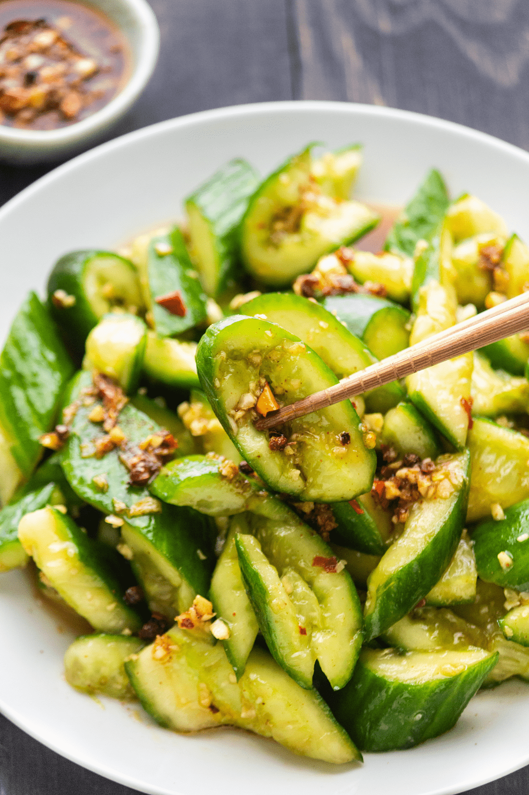

Pickled Onions (2 variations)
- 1 cup Kikkoman Shoyu
- 1 cup sugar
- 1 cup distilled white vinegar
- 1 fresh jalepeño, chopped
Put shoyu, sugar, and vinegar in a pot and bring to a boil. Remove from heat and cool. Once mixture is cooled, add chopped jalapeño and onions. Marinate for a day.
- 6 cup vinegar
- 6 cup water
- 1⁄2 cup garlic salt
- 1⁄2 cup Hawaiian salt
- 1 cup sugar
- 1-3 chili peppers (preference)
Boil all ingredients until sugar dissolves. Let cool to room temperature. Pour over onion and green peppers (or vegetable of choice). Marinate for at least 2 days.
Caesar Salad
- 4 cloves garlic, pressed
- 1 Tbsp Worcestershire sauce
- 1 tsp anchovy paste
- 1 lemon, squeezed
- 1 egg yolk (optional)
- 3⁄4 cup mayonnaise
- 1 cup grated parmesan cheese
- 3 heads of romaine lettuce, chopped
- Croutons
In a large bowl, combine anchovy paste, garlic, Worcestershire sauce, lemon juice, and egg yolk. Then, combine mayonnaise and 1⁄2 cup of grated parmesan cheese. Add the remaining lettuce. Sprinkle the remaining grated parmesan cheese evenly over the lettuce. Toss until well mixed. Add croutons and shredded parmesan cheese and toss again.
Chinese Chicken Salad
Serving size: 10-12- 1 head iceberg lettuce, torn into bite-size pieces
- 3-4 romaine lettuce leaves, cut into bite-size pieces
- 3 stalks celery, thinly sliced at a diagonal
- 1⁄2 cup green onion, chopped
- 1 bunch Chinese parsley or cilantro, chopped (optional)
- 1 pkg boiled ham, 8 slices (6oz.) cut into thin strips
- 2-3 shredded chicken breasts, cooked in lightly salted water
- 20 sheets wun tun pi, cut into thin strips and deep-fried until golden brown OR 1 can La Choy Chow Mein Noodles
- Dressing:
- 4 Tbsp sugar
- 2 tsp salt
- 1 tsp pepper
- 1⁄2 cup olive oil
- 6 Tbsp vinegar (apple cider or white)
- 1⁄2 tsp sesame oil
Mix all vegetables and refrigerate. Just before serving, add ham and chicken and toss with veggies. Pour desired amount of dressing over and toss. Add desired amount of wun tun pi or noodles and toss lightly.
Cucumber Namasu
- 4 Japanese cucumbers or English cucumbers
- 2 tsp salt (adjust to taste)
- Sauce:
- 11⁄4 cup sugar
- 1 cup Japanese vingear or white vinegar
- 1 Tbsp salt
Combine sauce ingredients and heat through in small pot until sugar dissolves.
Cut peeled cucumbers in 1⁄2 inch round slices and add salt. Toss and let sit 30-40 mins, toss occasionally. May add more salt if needed. Drain. Do not squeeze. Let sit, draining, for about 20-30 mins. Pour about 1 cup of sauce over cucumbers and toss. Refrigerate remaining sauce overnight. Add more sauce the next day if needed. You can also add slivered carrots for color and crunch.
Hawaiian Sweet Potato Casserole
- 11⁄2 pound - 2 pound sweet potatoes
- 3⁄4 cup coconut crème or milk
- 1-2 Tbsp brown sugar
- 3 Tbsp melted butter
- 3⁄4 cup shredded coconut
- 1 (15.5oz.) can of pineapple chunks, cut in half
Cook potatoes in skin until tender. Cool and remove skins. Mash potatoes then add coconut crème/milk, brown sugar, butter, and mix well. Then, add shredded coconut and pineapple chunks. Bake in lightly sprayed casserole dish for about 20 mins. Sprinkle top with extra shredded coconut. Broil on high until lightly browned.
Homemade Rolls
Makes 2-3 dozen rolls depending on size of your rolls. A 9 by 13 inch pan can accommodate 2 dozen rolls.- 1 pkg yeast + 1 tsp sugar
- 1⁄4 cup very warm water
- 1 cup whole milk, scalded
- 1⁄4 cup sugar
- 4 Tbsp butter or shortening
- 1 tsp salt
- 1 egg, beaten
- 31⁄2 cup flour
Dissolve yeast in warm water (110 degrees farenheit) and set aside to proof. Add liquid mixture to large mixing bowl.
Combine milk, sugar, salt, and butter in small pot to melt butter and dissolve sugar. Set aside and cool to lukewarm.
Add the beaten egg to the yeast mixture. Add flour one cup at a time to form a soft dough, beating well using the dough attachment of mixer or you can knead by hand.
Cover dough with damp dishtowel or plastic saran wrap and let rise in warm place until it doubles in size (1 - 11⁄2 hours).
Punch dough down to get air bubbles out. Turn out dough on lightly floured surface and shape rolls as desired in pan. Let rise again until doubled in size.
Drizzle some melted butter over rolls and bake at 400 degrees farenheit for about 15 minutes or until golden brown.
Cornbread
- 3 cups bisquick
- 11⁄2 cup sugar
- 1 cup yellow cornmeal
- 1 tsp baking soda
- 1 cup (2 blocks) melted butter
- 3 beaten eggs
- 1 1⁄2 cup milk
Combine the bisquick, sugar, cornmeal and baking soda in medium sized bowl. Then, combine the butter, eggs, and milk in a separate bowl. Pour the liquid mixture into the dry mixture and mix until incorporated. Then, pour in a 9 by 13 inch baking pan and bake at 350 degrees farenheit for about 45 minutes, or until golden brown.